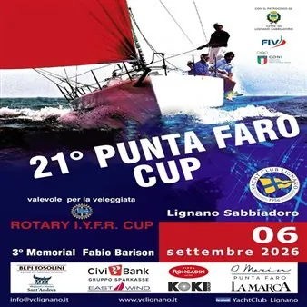

dom 6 set · dalle 11:00
21ª Punta Faro Cup
Regata velica d’altura per classi Open e veleggiata valida per la Juris Cup 2026.
 Indicazioni
Indicazioni
- Costi e prenotazioni
- Visione libera dalle aree pubbliche · Iscrizione richiesta agli equipaggi
- Programma
- Programma confermato. Data, fascia oraria, campo di regata e organizzatore confermati.
- In caso di maltempo
- La regata dipende dalle condizioni meteomarine; verificare gli avvisi dello Yacht Club.
- Note
- Base a terra a Marina Punta Faro.
L’EVENTO
Descrizione completa
La Punta Faro Cup – Trofeo Fabio Barison è una regata velica d’altura aperta alle classi Open. Il percorso a vertici fissi si svolge nel campo di regata davanti alla spiaggia, con base a terra a Punta Faro.
La manifestazione è aperta a imbarcazioni d’altura e vale per la Juris Cup 2026. Per il pubblico l’interesse principale è seguire partenze e arrivi dalla zona di Punta Faro; iscrizioni e istruzioni di regata riguardano invece gli equipaggi.
Il portale locale indica attività dalle 11:00 alle 19:00. Il programma tecnico definitivo e le comunicazioni meteo sono affidati allo Yacht Club Lignano.
IL PROGRAMMA
Programma e orari
Appuntamenti raccolti dalle fonti elencate. Dove manca un orario, non è ancora disponibile in questa scheda.
Domenica 6 settembre
- 11:00 · Avvio della manifestazione
- Regata sul campo antistante la spiaggia
- Entro le 19:00 · conclusione prevista
INFORMAZIONI UTILI
Prima di partire
- Base a terra a Marina Punta Faro.
- Manifestazione agonistica e diporto; il pubblico assiste da terra.
- Contatti: 0431 73161 · 379 2546652 · info@yclignano.it
ORGANIZZAZIONE